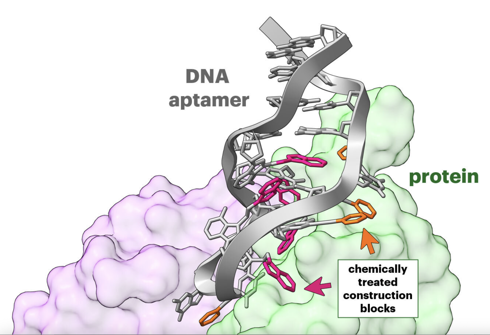

Aptamer Biosensor for Lupus (SLE)
Interdisciplinary AI and biotechnology research as part of a team, in collaboration with Ishwar K. Puri, USC Senior Vice President of Research and Innovation

My Specialty
I contribute between product strategy, machine learning, biological sciences, mechanical and materials engineering, and design. I work deeply within each of these teams on this project, allowing me to bring a technically-advanced product focus to scientific innovation. I tackle both building the ML framework as well as analyzing product innovation opportunities.
Project Abstract
The research seeks to develop a generative machine learning framework to accelerate aptamer candidate discovery and subsequently advance biosensing technologies. Initially targeting PLD4, a protein implicated in systemic lupus erythematosus (lupus), the framework combines protein sequence analysis, binding-affinity prediction, and structural refinement to generate highly selective DNA and RNA aptamer candidates. By improving the efficiency of molecular design, the research aims to reduce the time, cost, and experimental complexity of conventional aptamer discovery, with broader potential applications in precision diagnostics, biosensing, and therapeutics.
“[Breeze’s] impressive background, accomplishments, and thoughtfulness made [her] an excellent candidate for this opportunity”
Technical supervisor
Reflection
This experience deepens my technical experience with generative AI, and within a biosensing context. Additionally, it’s building relationships for me across USC’s research and innovation ecosystem.
It is very rewarding to create real-world, impactful products with emerging tech. Particularly, I am deeply interested in health and wellness products, so this research into sensor development is a wonderful experience for me.